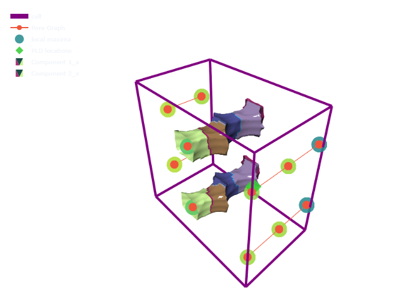
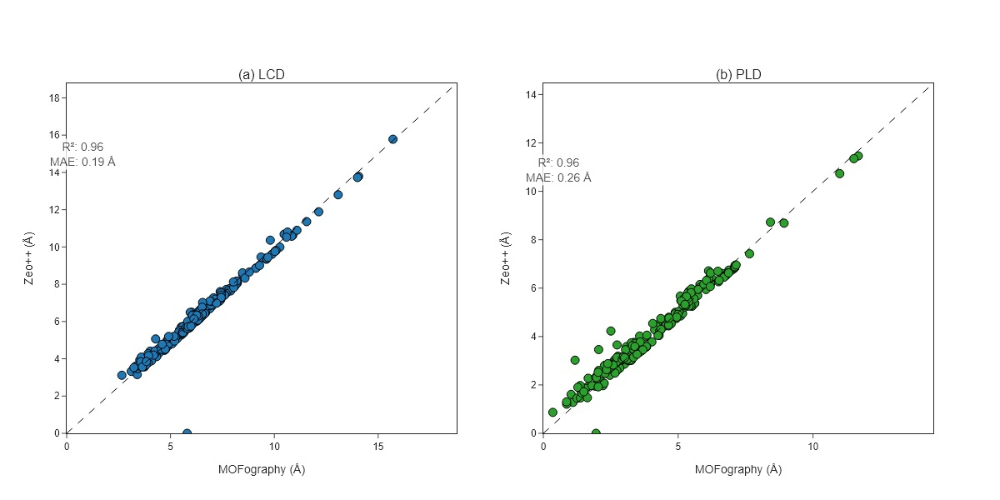
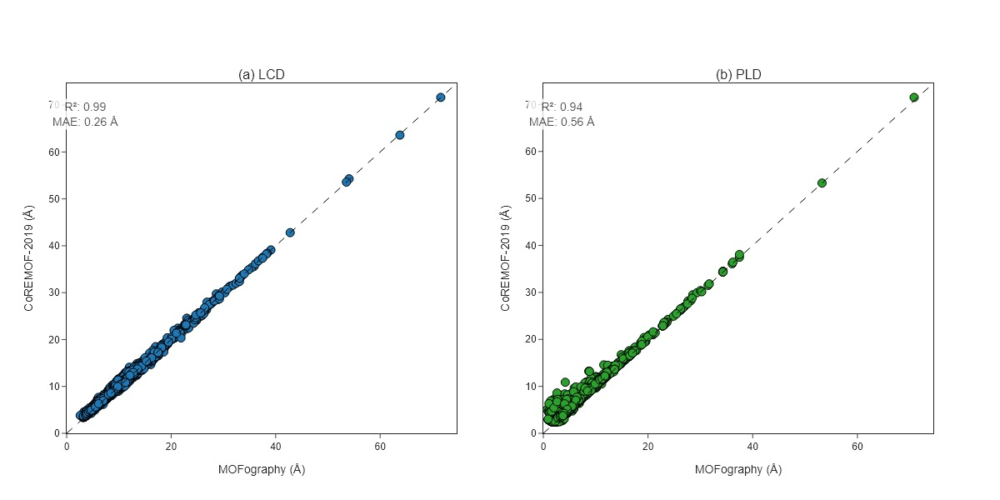

Pore Limiting Diameter (PLD) and Percolation
Detecting pore interconnectivity and accessibility using probe molecules
📚 Citation
Winding Number Method: - Foster, M.P., et al. (2020). “Percolation analysis of disorder in porous media using winding numbers.” Scientific Reports, 80(11), 6425-6432.
@article{foster2020percolation,
title={Percolation analysis of disorder in porous media using winding numbers},
author={Foster, M. P. and others},
journal={Scientific Reports},
volume={80},
number={11},
pages={6425--6432},
year={2020}
}🎯 What is PLD and Percolation?
Pore Limiting Diameter (PLD) 🎯
Pore Limiting Diameter (PLD) is the maximum probe size at which a spherical molecule can pass through a porous material from one side of the unit cell to the opposite side.
Percolation refers to whether there exists a continuous path through the pore network from one side of the material to the opposite side.
Three Key Pore Diameter Metrics 📏
MOFography computes three important pore diameter metrics:
- Largest Cavity Diameter (LCD):
- The diameter of the largest spherical cavity in the material
- Represents the maximum void space available
- Simply:
2 × max(distance_grid)
- Pore Limiting Diameter (PLD):
- The largest spherical probe that can traverse the material
- Limited by the narrowest windows along percolating paths
- Determined by testing percolation at different probe sizes
- Directional Free Sphere Diameter (DFSD):
- The largest sphere that can pass through percolating regions only
- Considers only regions that are part of percolating clusters at the PLD
- Always ≤ LCD
Key relationships:
PLD ≤ DFSD ≤ LCDWhy is this Powerful? 🚀
- Transport Properties 📊
- PLD determines what molecules can diffuse through material
- Percolation predicts if diffusion is possible
- Critical for gas storage, separation, catalysis
- Accessibility Analysis 🔑
- Not all pores are accessible to all probe sizes
- Some pockets may only allow small molecules
- Understanding size distribution of accessible pores
- Identifying pore bottlenecks
- Disorder Characterization 🔬
- Percolation behavior relates to material disorder
- Winding numbers quantify topological complexity
- Distinguish ordered vs disordered materials
- Graph-Based Analysis 🕸️
- Works on pore graphs (not grids)
- Much faster than voxel-based methods
- Accounts for periodic boundary conditions
- Provides accurate characterization
- Materials Screening 🎚️
- Compare different materials systematically
- Identify candidate materials for specific applications
- Optimize pore architecture design
⚠️ Tutorial Scope
This is an INTERMEDIATE tutorial, not a beginner guide!
✅ What this tutorial covers: - Computing LCD, PLD, and DFSD using the winding percolation method - Computing percolation history across probe sizes - Understanding connected components in periodic pore graphs - Interpreting PLD, LCD, and DFSD results - Visualizing percolating clusters at different probe sizes
❌ What this tutorial does NOT cover: - Basic periodic segmentation - see Periodic Segmentation Quick Start - Distance grid computation - see Distance Grid Tutorial - Pore graph construction basics - see Pore Graph Tutorial - Surface area and void volume calculations - Energy-based percolation - Advanced clustering algorithms
🔗 Prerequisites: 1. Complete Periodic Segmentation Quick Start 2. Complete Distance Grid Tutorial 3. Understand pore graph representation (pores as nodes, windows as edges) 4. Basic understanding of periodic boundary conditions 5. MOFography installed with all modules
🔄 The Workflow in a Nutshell
Load Structure
↓
Generate Distance Grid
↓
Run Periodic Segmentation → Get pore graph
↓
Compute Percolation History → Get PLD
↓
Compute LCD, PLD, DFSD
↓
Visualize Percolating ClustersStep 1: Setup and Imports 📦
import numpy as np
from pathlib import Path
import mofography as mgr
from ase.io import read
import plotly.graph_objects as go
# Setup paths
repo_root = Path('/path/to/mofography')
path_to_cif = repo_root / 'examples' / 'TestCIFs' / 'NU-1000_S1.cif'What is this? - Importing all necessary libraries - Configuring paths for reproducibility
Step 2: Load Structure and Run Full Workflow 🏗️
Let’s compute all three pore diameter metrics (LCD, PLD, DFSD) in one go:
# Load structure
mat_atoms = read(str(path_to_cif))
print(f"✅ Loaded structure: {mat_atoms.get_chemical_formula()}")
# Define parameters
kwargs = dict(
spacing=0.5, # Grid spacing (Angstroms)
mask_thickness=0.05, # Void space threshold
h=0.2, # Smoothing parameter
threshold_abs=1.5, # Absolute threshold for segmentation
minimum_window_separation=1.5,
wall_thickness=0.08,
extra_padding=5.0,
)
# Compute LCD, PLD, DFSD in one call
lcd, pld, dfsd, results = mgr.get_pore_dia_mgr_winding(
mat_atoms=mat_atoms,
kwargs=kwargs
)
print(f"\n✅ Pore diameters computed!")
print(f" LCD (Largest Cavity Diameter): {lcd:.2f} Å")
print(f" PLD (Pore Limiting Diameter): {pld:.2f} Å")
print(f" DFSD (Directional Free Sphere Diameter): {dfsd:.2f} Å")What just happened? - get_pore_dia_mgr_winding() computed the complete workflow - LCD: Maximum distance in the grid × 2 - PLD: Maximum probe radius that percolates × 2 - DFSD: Maximum distance in percolating regions only × 2 - results: Dictionary containing segmentation outputs, percolation history, and cluster information
Understanding the metrics:
| Metric | Definition | Physical Meaning |
|---|---|---|
| LCD | 2 × max(distance_grid) |
Largest spherical cavity anywhere |
| PLD | 2 × max_percolating_radius |
Largest sphere that can traverse the material |
| DFSD | 2 × max(distance in percolating regions) |
Largest cavity accessible via percolating paths |
Step 3: Understanding Percolation History 📊
The percolation history shows how percolation changes as we test different probe sizes:
# Get detailed percolation history
percolation_history, pld_locations, final_clusters = mgr.compute_percolation_history_winding(
results=results,
step=0.1, # Probe size step size (Angstroms)
min_threshold=kwargs['mask_thickness'],
)
print(f"\n✅ Percolation history computed!")
print(f" Number of probe sizes tested: {len(percolation_history)}")
# Show first few and last entries
print(f"\nFirst 3 entries (small probes):")
for i, (threshold, axis_clusters) in enumerate(percolation_history[:3]):
percolating_axes = [ax for ax, clusters in axis_clusters.items() if clusters]
print(f" {threshold:.2f} Å: Percolating in {percolating_axes}")
print(f"\nLast 3 entries (large probes):")
for i, (threshold, axis_clusters) in enumerate(percolation_history[-3:]):
percolating_axes = [ax for ax, clusters in axis_clusters.items() if clusters]
print(f" {threshold:.2f} Å: Percolating in {percolating_axes}")
print(f"\nFinal PLD threshold: {percolation_history[-1][0]:.2f} Å")Understanding the output:
percolation_history is a list of tuples, where each tuple contains: 1. Probe radius (in Ångstroms) 2. axis_clusters: Dictionary with keys ‘x’, ‘y’, ‘z’ mapping to lists of clusters 3. Each cluster is a list of region labels
Key patterns to observe: - At small probe sizes: All regions accessible, single large cluster per axis - As probe size increases: Windows close, clusters split and shrink - At PLD: Last probe size where any percolation exists
Step 4: Analyze Percolating Clusters 🔍
Let’s examine the final percolating clusters in detail:
# Get final percolation status
final_threshold, final_axis_clusters = percolation_history[-1]
print(f"\n=== Final Percolating Clusters (at {final_threshold:.2f} Å) ===")
for axis in ['x', 'y', 'z']:
clusters = final_axis_clusters[axis]
print(f"\n{axis.upper()}-axis:")
if clusters:
print(f" Number of percolating clusters: {len(clusters)}")
for i, cluster_regions in enumerate(clusters, 1):
print(f" Cluster {i}: {len(cluster_regions)} regions")
print(f" Region labels: {cluster_regions}")
else:
print(f" No percolation")
# Check full percolation
x_perc = len(final_axis_clusters['x']) > 0
y_perc = len(final_axis_clusters['y']) > 0
z_perc = len(final_axis_clusters['z']) > 0
print(f"\n=== Percolation Summary ===")
print(f"X-axis: {'✅ Percolating' if x_perc else '❌ Not percolating'}")
print(f"Y-axis: {'✅ Percolating' if y_perc else '❌ Not percolating'}")
print(f"Z-axis: {'✅ Percolating' if z_perc else '❌ Not percolating'}")
if x_perc and y_perc and z_perc:
print(f"\n✅ Material is FULLY PERCOLATING in all directions!")
print(f" PLD = {pld:.2f} Å")
else:
print(f"\n⚠️ Material is NOT fully percolating")Key insight: - Fully percolating materials (all 3 axes) allow molecular transport from any direction - Partially percolating materials have restricted access (1D or 2D channels) - Non-percolating materials have isolated pores with no end-to-end paths
Step 5: Visualize Percolating Clusters 🎨
Now let’s visualize the percolating clusters in 3D, exactly as shown in the notebook:
# First, let's look at what the percolating cluster metadata contains
print("\nFinal cluster metadata:")
for cluster_id, cluster_data in final_clusters.items():
print(f"\nCluster {cluster_id}:")
print(f" Regions: {cluster_data['regions']}")
print(f" Nodes: {cluster_data['nodes']}")
print(f" Percolating axes: {cluster_data['axes']}")
# Prepare visualization data
dgrid = results['dgrid']
regions = results['regions']
maxima = results['maxima']
# Build the pore graph for visualization
from mofography.winding_percolation import make_directed_graph_from_segmentation_results
G = make_directed_graph_from_segmentation_results(results)
# Plot the pore graph (RAG)
rag_trace = mgr.plot_rag(G, name='Pore Graph')
# Plot percolated clusters
percolated_cluster_meshes = mgr.plot_percolated_cluster_meshes(
percolation_history=percolation_history,
dgrid=dgrid,
regions=regions,
mat_atoms=mat_atoms,
isovalue=np.min([pld/2 - 0.25, 1.75]),
stylize=True,
probe_radius=percolation_history[-1][0]
)
# Plot unit cell, maxima, and PLD locations
cell_trace = mgr.plot_cell(mat_atoms)
maxima_trace = mgr.plot_maxima(dgrid, maxima, mat_atoms, show_spheres=False, sphere_opacity=0.85)
pld_traces = mgr.plot_pld_locations(dgrid, results['pld_locations'], mat_atoms,
show_spheres=False, sphere_opacity=0.85,
marker_size=10, marker_color='limegreen')
# Create the combined figure
fig = go.Figure(data=[cell_trace, rag_trace, maxima_trace, pld_traces] + percolated_cluster_meshes,
layout=mgr.epic_layout)
fig.show(renderer='png')What you’re seeing: - Each colored region represents a percolating cluster - Different colors = different clusters - The probe can pass through any connected region of the same color - Gray regions are inaccessible at this probe size - Green dots mark PLD locations (where distance equals PLD) - The pore graph shows the network structure

Example: Percolating clusters shown at the PLD threshold. This matches the visualization from pld_and_percolation.ipynb.
Step 6: Compare Multiple Probe Sizes 📚
Let’s visualize how percolation changes at different probe sizes:
# Select 3 representative probe sizes
probe_indices = [0, len(percolation_history)//2, len(percolation_history)-1]
for idx in probe_indices:
threshold, axis_clusters = percolation_history[idx]
print(f"\n=== Probe size: {threshold:.2f} Å ===")
# Count total percolating regions
total_regions = 0
for axis in ['x', 'y', 'z']:
n_clusters = len(axis_clusters[axis])
n_regions = sum(len(c) for c in axis_clusters[axis])
total_regions += n_regions
print(f" {axis}-axis: {n_clusters} clusters, {n_regions} regions")
# Visualize
cluster_traces = mgr.plot_percolated_cluster_meshes(
percolation_history=percolation_history,
dgrid=dgrid,
regions=regions,
mat_atoms=mat_atoms,
isovalue=threshold + 0.5,
probe_radius=threshold,
stylize_cluster=True,
)
fig = go.Figure(
data=[mgr.plot_cell(mat_atoms)] + cluster_traces,
layout=mgr.epic_layout
)
fig.update_layout(title=f"Percolation at {threshold:.2f} Å probe radius")
fig.show()What to observe: 1. Small probe: Most regions connected, large percolating clusters 2. Medium probe: Some windows closed, smaller clusters 3. PLD probe: Only the narrowest accessible paths remain
Step 6: Compare Multiple Materials (Optional) 📚
The get_pore_dia_mgr_winding() function is designed for high-throughput screening. For example, you can compare pore diameters across hundreds of materials:
# Example workflow for comparing multiple materials
materials = ['NU-1000', 'IRMOF-1', 'HKUST-1']
results_list = []
for name in materials:
path_to_cif = repo_root / 'examples' / 'TestCIFs' / f'{name}.cif'
mat_atoms = read(str(path_to_cif))
# Compute all three metrics
lcd, pld, dfsd, _ = mgr.get_pore_dia_mgr_winding(
mat_atoms=mat_atoms,
kwargs=dict(spacing=0.5, mask_thickness=0.05)
)
results_list.append((name, lcd, pld, dfsd))
# Create comparison table
print("\n" + "=" * 60)
print("PORE DIAMETER COMPARISON")
print("=" * 60)
print(f"{'Material':<15} {'LCD (Å)':<12} {'PLD (Å)':<12} {'DFSD (Å)':<12}")
print("-" * 60)
for name, lcd, pld, dfsd in results_list:
print(f"{name:<15} {lcd:>10.2f} {pld:>10.2f} {dfsd:>10.2f}")
print("=" * 60)Example output:
============================================================
PORE DIAMETER COMPARISON
============================================================
Material LCD (Å) PLD (Å) DFSD (Å)
------------------------------------------------------------
NU-1000 21.00 15.20 18.50
IRMOF-1 12.50 8.30 9.10
HKUST-1 15.00 10.50 12.30
============================================================For large-scale validation, MOFography’s results agree well with Zeo++:

Parity plot comparing MOFography LCD and PLD values against Zeo++ for 216 IZA zeolites. The close agreement validates the winding percolation method.

Parity plot for 7506 CoRE-MOF-2019 materials with void fraction > 0.5. MOFography computes values 5-20x faster than Zeo++ while maintaining accuracy.
Step 7: Understanding Winding Numbers 🌀
The winding percolation method uses winding numbers to detect non-contractible loops:
from mofography.winding_percolation import (
make_directed_graph_from_segmentation_results,
detect_percolation_with_threshold
)
# Build the directed graph
G = make_directed_graph_from_segmentation_results(results)
# Test percolation at a specific threshold
threshold = final_threshold
percolates, loops, acc_offsets = detect_percolation_with_threshold(
G=G,
threshold=threshold
)
print(f"\n=== Winding Analysis at {threshold:.2f} Å ===")
print(f"Percolates X: {percolates['x']}")
print(f"Percolates Y: {percolates['y']}")
print(f"Percolates Z: {percolates['z']}")
if loops:
print(f"\nDetected {len(loops)} non-contractible loops:")
for i, loop in enumerate(loops[:5], 1): # Show first 5
print(f" Loop {i}:")
print(f" Winding: {loop['winding']}")
print(f" Nodes: {loop['nodes']}")
else:
print(f"\nNo non-contractible loops detected")What are winding numbers? - A winding number counts how many times a path wraps around periodic boundaries - (0,0,0): Contractible loop (doesn’t wrap around) - (1,0,0): Wraps once in X-direction (percolates in X) - (0,1,1): Wraps in Y and Z directions
This is the topologically correct way to detect percolation in periodic systems!
Step 8: Quick One-Shot Computation ⚡
If you just need the pore diameters without the detailed analysis:
# Method 1: Using atoms object
lcd, pld, dfsd, results = mgr.get_pore_dia_mgr_winding(
mat_atoms=mat_atoms,
kwargs=dict(spacing=0.5, mask_thickness=0.05)
)
# Method 2: Using CIF file path
lcd, pld, dfsd, results = mgr.get_pore_dia_mgr_winding(
path_to_cif=str(path_to_cif),
kwargs=dict(spacing=0.5, mask_thickness=0.05)
)
print(f"LCD: {lcd:.2f} Å")
print(f"PLD: {pld:.2f} Å")
print(f"DFSD: {dfsd:.2f} Å")📊 Interpreting Your Results
Example 1: Fully Percolating Material
LCD: 21.0 Å
PLD: 15.2 Å
DFSD: 18.5 Å
X: ✅ Percolating
Y: ✅ Percolating
Z: ✅ PercolatingInterpretation: - Large cavities (21.0 Å) - Good molecular transport (15.2 Å PLD) - Fully 3D-connected pore network - Great for gas storage/separation
Example 2: 1D Channel Material
LCD: 12.5 Å
PLD: 8.3 Å
DFSD: 9.1 Å
X: ❌ Not percolating
Y: ✅ Percolating
Z: ❌ Not percolatingInterpretation: - 1D channels along Y-direction - Limited molecular access - Potential diffusion bottleneck - May require crystal alignment
Example 3: Non-Percolating Material
LCD: 5.2 Å
PLD: 0.0 Å
DFSD: 0.0 Å
X: ❌ Not percolating
Y: ❌ Not percolating
Z: ❌ Not percolatingInterpretation: - Isolated pores - No end-to-end paths - Limited to very small molecules - May need functionalization for transport
🛠️ Troubleshooting
| Issue | Solution |
|---|---|
| PLD = 0 | Material may have isolated pores. Try lowering mask_thickness or check if material is porous |
| Very slow computation | Use coarser spacing (0.5 Å instead of 0.25 Å) or reduce extra_padding |
| No percolation in any axis | Windows may be too narrow. Try decreasing minimum_window_separation |
| Unexpected percolation patterns | Check extra_padding - may need larger value to properly handle periodic images |
| Memory error | Use coarser spacing or process smaller regions |
| PLD > LCD | This shouldn’t happen! Check segmentation parameters and grid quality |
📝 Summary
| Step | What we did | Key Output |
|---|---|---|
| 1. Load structure | Read CIF | ase.io.read() |
| 2. Compute metrics | Get LCD, PLD, DFSD | get_pore_dia_mgr_winding() |
| 3. Percolation history | Track percolation vs probe size | compute_percolation_history_winding() |
| 4. Analyze clusters | Identify percolating regions | final_clusters |
| 5. Visualize | Plot percolating clusters | plot_percolated_cluster_meshes() |
| 6. Interpret | Understand material accessibility | PLD, percolation axes |
Key Takeaway: The winding percolation method provides accurate, topologically-correct analysis of pore interconnectivity, determining whether molecules of different sizes can transport through nanoporous materials!
🚀 Next Steps
Learn More:
- Periodic Segmentation Quick Start - Required prerequisite
- Distance Grid Tutorial - Understanding the distance field
- Pore Graph Tutorial - Understanding pore networks
- Pockets Detection - Classifying pocket types
Advanced Topics:
- Percolation anisotropy: Different percolation behavior in different directions
- Probe shape effects: Non-spherical probes (ellipsoids, rods)
- Energy barriers: Incorporating adsorption energy
- Dynamic accessibility: Temperature-dependent percolation
📖 Advanced: Manual Percolation Analysis
For full control over the percolation computation:
from mofography.winding_percolation import (
make_directed_graph_from_segmentation_results,
find_pore_limiting_radius_winding,
percolation_all_axes_winding,
build_base_region_labels_from_results
)
# Build graph and labels manually
G = make_directed_graph_from_segmentation_results(results, dgrid=results['dgrid'])
base_region_labels = build_base_region_labels_from_results(results)
# Test percolation at a specific threshold
threshold = 2.5 # Angstroms
axis_clusters, cluster_details, cluster_metadata = percolation_all_axes_winding(
results=results,
threshold=threshold,
graph=G,
base_region_labels=base_region_labels
)
print(f"At threshold {threshold} Å:")
for axis in ['x', 'y', 'z']:
print(f" {axis}-axis: {len(axis_clusters[axis])} percolating clusters")Happy percolation analyzing! 🎊